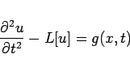
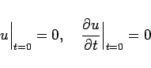
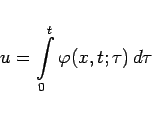
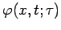
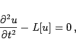
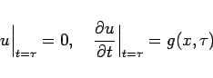
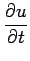
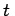
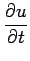
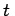

Inhalt Index DeskTop Bronstein

 Differentialgleichungen Partielle Differentialgleichungen Partielle Differentialgleichungen aus Naturwissenschaft und Technik Problemstellungen und Randbedingungen
Differentialgleichungen Partielle Differentialgleichungen Partielle Differentialgleichungen aus Naturwissenschaft und Technik Problemstellungen und Randbedingungen


Die Lösung homogener oder inhomogener linearer partieller Differentialgleichungen bei inhomogenen Anfangs- oder Randbedingungen kann auf die Lösung einer Gleichung zurückgeführt werden, die sich von der gegebenen lediglich durch das die unbekannte Funktion nicht mehr enthaltende freie Glied unterscheidet, jetzt aber bei homogenen Bedingungen. Dazu reicht es aus, die zu bestimmende Funktion durch eine Differenz zwischen ihr und einer beliebigen, zweimal differenzierbaren Funktion zu ersetzen, die die gegebenen inhomogenen Bedingungen erfüllt.
Generell wird von der Erkenntnis Gebrauch gemacht, daß sich die Lösung einer linearen inhomogenen partiellen Differentialgleichung bei gegebenen inhomogenen Anfangs- oder Randbedingungen als Summe der Lösung der gleichen Differentialgleichung bei Nullbedingungen und der Lösung der entsprechenden homogenen Differentialgleichung bei den gegebenen Bedingungen darstellen läßt.
Zur Zurückführung der Lösung der linearen inhomogenen partiellen Differentialgleichung
|  | (9.101a) |
bei den homogenen Anfangsbedingungen
|  | (9.101b) |
auf die Lösung des CAUCHYschen Problems für die zugehörige homogene Differentialgleichung wird
|  | (9.101c) |
gesetzt. Dabei ist  die Lösung der Differentialgleichung
|  | (9.101d) |
die den Randbedingungen
|  | (9.101e) |
genügt. In diesen Gleichungen steht x symbolisch für die Gesamtheit der n Variablen  des n-dimensionalen Problems. Mit L[u] wird dabei ein linearer Differentialausdruck bezeichnet, der die Ableitung  enthalten darf, nicht aber höhere Ableitungen nach .
des n-dimensionalen Problems. Mit L[u] wird dabei ein linearer Differentialausdruck bezeichnet, der die Ableitung  enthalten darf, nicht aber höhere Ableitungen nach .